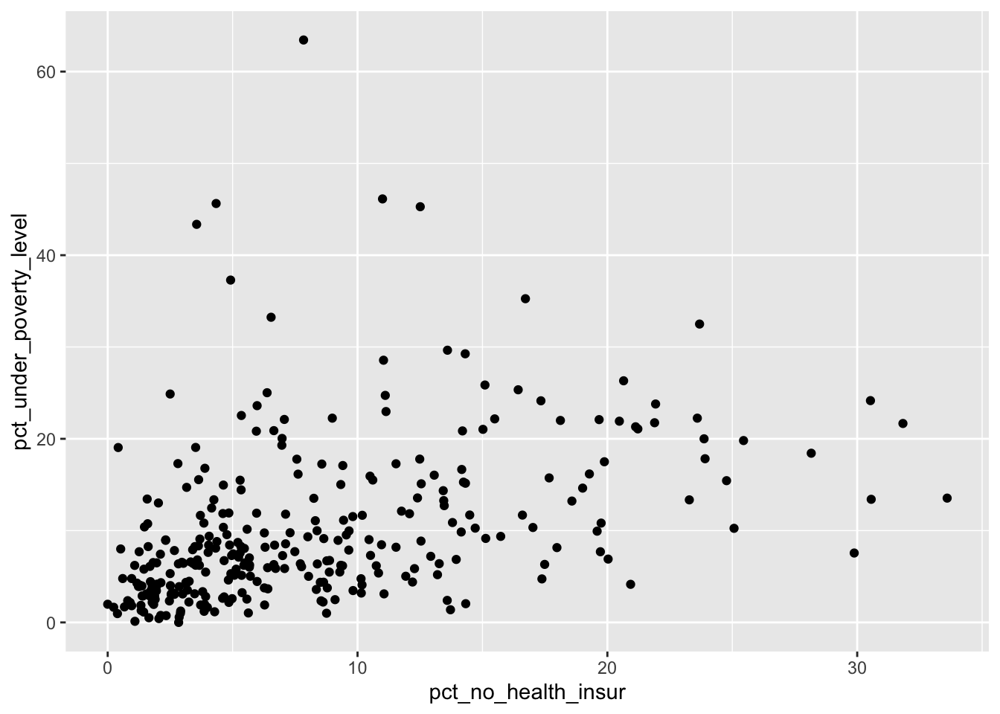
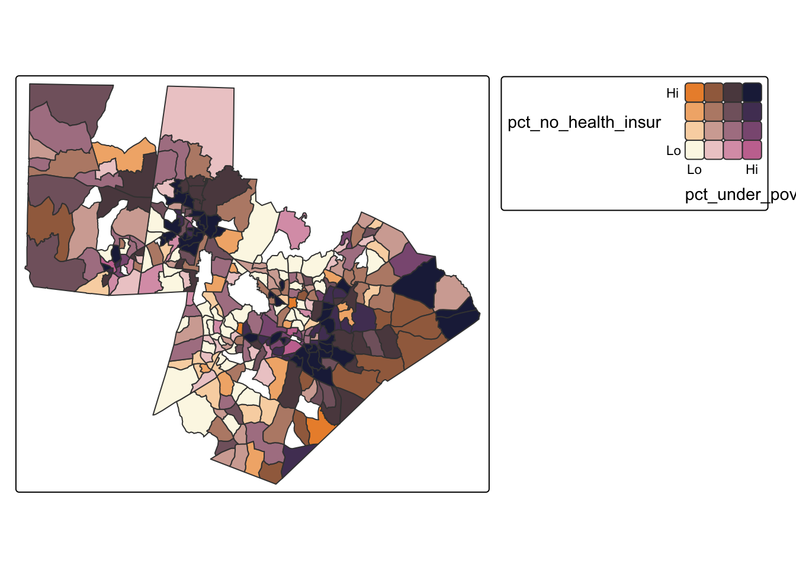
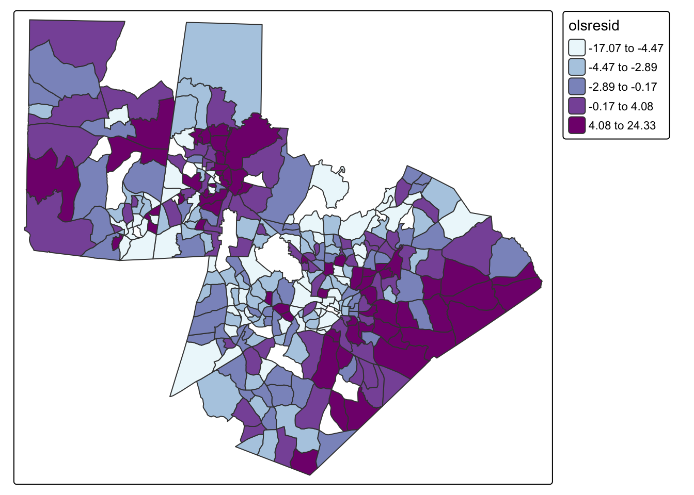

library(tidyverse)
library(tmap)
library(sf)
library(spatialreg)
library(spdep)
acs_tract_nc <- st_read("https://drive.google.com/uc?export=download&id=1cnz4xgdDRZvlXzN3IyvCxOETRWfrpw-0") |> filter(COUNTYFP %in% c("135", "183", "063")) |> filter(!is.na(pct_no_health_insur), !is.na(pct_under_poverty_level))15 Bivariate Relationships and Regression
In this chapter, we will explore relationships between two variables. There are multiple ways to explore bivariate relationships, including visual and descriptive approaches such as scatterplots and bivariate maps that allow us to identify patterns without making causal claims. These methods help us understand how two variables co-vary across space.
Linear regression provides a statistical framework for modeling relationships between two variables and evaluating whether an observed association is unlikely to have occurred by chance. Ordinary least squares (OLS) regression allows us to test hypotheses about the strength and direction of a relationship. However standard regression models assume that observations are independent. When spatial dependence is present, OLS regression can produce biased estimates. When spatial dependence is present, we can use alternative, spatially-explicit regression approaches.
We will use the following spatial datasets:
- 2023 5-year ACS estimates for the triangle region of North Carolina
15.1 Testing Correlation
Correlation provides a single summary measure of the strength and direction of association between two numeric variables. The Pearson correlation coefficient ranges from −1 to 1, where values closer to −1 or 1 indicate stronger linear relationships, and values near 0 indicate little to no linear association. Correlation is useful as an initial diagnostic
#test correlation
cor(acs_tract_nc$pct_no_health_insur, acs_tract_nc$pct_under_poverty_level)[1] 0.41035Q1: What does our correlation value tell us about the strength and direction of the relationship between percent of population without health insurance and percent of population living under the poverty level?
15.2 Scatterplot
One of the simplest visualizations we can use to explore bivariate relationships is a scatterplot. For instance, if we want to explore the relationship between our no health insurance variable and our poverty variable, we could do the following
ggplot(acs_tract_nc, aes(x = pct_no_health_insur, y= pct_under_poverty_level)) + geom_point()
15.3 Bivariate Map
While scatterplots ignore geography, bivariate maps allow us to explore how two variables co-vary across space. A bivariate map classifies each variable into categories (for instance, quantiles) and combines them into a single color scheme, making it possible to identify areas where both variables are simultaneously high or low.
#bivariate map based on quantiles
tm_shape(acs_tract_nc) +
tm_polygons(fill = tm_vars(c("pct_no_health_insur", "pct_under_poverty_level"), multivariate = TRUE),
fill.scale = tm_scale_bivariate(values ="bivario.folk_warmth",
scale1 = tm_scale_intervals(n = 4, style = "quantile", labels = c("Lo", "", "", "Hi")),
scale2 = tm_scale_intervals(n=4, style = "quantile", labels = c("Lo", "", "", "Hi"))))
Q2: What does our bivariate map tell us about where the relationships between these two variables are the strongest?
15.4 Regression
Linear regression provides a formal statistical framework for modeling the relationship between two variables. In an ordinary least squares (OLS) regression, we estimate the expected value of a dependent variable as a linear function of an independent variable. OLS allows us to quantify the strength and direction of the relationship and to assess whether the observed association is unlikely to have occurred by chance.
#traditional regression
ols_model <- lm(pct_no_health_insur ~ pct_under_poverty_level, data = acs_tract_nc)
#see results
summary(ols_model)
Call:
lm(formula = pct_no_health_insur ~ pct_under_poverty_level, data = acs_tract_nc)
Residuals:
Min 1Q Median 3Q Max
-17.070 -4.134 -1.575 3.160 24.326
Coefficients:
Estimate Std. Error t value Pr(>|t|)
(Intercept) 5.03131 0.53405 9.421 < 2e-16 ***
pct_under_poverty_level 0.31335 0.03987 7.859 6.72e-14 ***
---
Signif. codes: 0 '***' 0.001 '**' 0.01 '*' 0.05 '.' 0.1 ' ' 1
Residual standard error: 6.147 on 305 degrees of freedom
Multiple R-squared: 0.1684, Adjusted R-squared: 0.1657
F-statistic: 61.76 on 1 and 305 DF, p-value: 6.723e-14We can interpret the OLS by looking at a few key things. The pct_under_poverty_level estimate tells us that a 1 unit increase in poverty is associated with a .31 unit increase in percent of population without health insurance. This coefficient is statistically significant. Our intercept tells us what conditions would be expected at 0% poverty (i.e. 5% without health insurance). Our multiple R-squared tells us how much of the variation in percent with no health insurance can be explained with our model (about 17% of our variation). The F-statistic shows that the model as a whole is statistically significant. Finally, the Residual standard error suggests that the typical deviation between observed and predicted uninsured rates is about 6 percentage points, indicating that while poverty is a significant predictor, a substantial portion of variation remains unexplained by this model.
However, OLS regression relies on several assumptions, including that observations are independent. One way to evaluate whether spatial dependence is present is to examine the residuals from an OLS regression. If the model has adequately captured the underlying process, residuals should be randomly distributed across space. Spatial clustering in residuals suggests that important spatial structure remains unmodeled. A statistically significant Moran’s I indicates that the independence assumption of OLS has been violated and that a spatial regression approach may be more appropriate.
#add residuals as a variable
acs_tract_nc <-acs_tract_nc |> mutate(olsresid = resid(ols_model))
#map residuals
tm_shape(acs_tract_nc) + tm_polygons(fill = "olsresid",fill.scale = tm_scale_intervals(values = "bu_pu", style = "quantile", n = 5))
#calculate neighborhoods
nb <- poly2nb(acs_tract_nc, queen = TRUE)
#set neighborhood weight matrix
nbw <- nb2listw(nb, style = "W")
#calculate Morans I
gmoran <- moran.test(acs_tract_nc$olsresid, nbw)
gmoran
Moran I test under randomisation
data: acs_tract_nc$olsresid
weights: nbw
Moran I statistic standard deviate = 8.7772, p-value < 2.2e-16
alternative hypothesis: greater
sample estimates:
Moran I statistic Expectation Variance
0.304927386 -0.003267974 0.001232937 Q3: Do our results indicate that we should use a spatial model?
15.5 Spatial Regression
When spatial dependence is present, we can use spatial regression models that explicitly incorporate spatial structure. Two common approaches are the spatial lag model and the spatial error model.
The spatial lag model includes a spatially lagged version of the dependent variable, allowing outcomes in one location to be influenced by outcomes in neighboring locations. This approach is appropriate when the process itself is spatially contagious or when values diffuse across space.
The spatial error model, in contrast, assumes that spatial dependence operates through the error term rather than through direct interaction between dependent variables. This approach is appropriate when unobserved spatial processes affect the outcome but are not explicitly included in the model.
To choose an appropriate model, it is important that we don’t just look at model fit, but that we also consider the potential underlying processes. In this case, it is not doesn’t make much logical sense that it would be a diffusive process, so a lag model wouldn’t be appropriate.
#lag model
fit.lag<-lagsarlm(pct_no_health_insur ~ pct_under_poverty_level,
data = acs_tract_nc,
listw = nbw)
#see results
summary(fit.lag)
Call:lagsarlm(formula = pct_no_health_insur ~ pct_under_poverty_level,
data = acs_tract_nc, listw = nbw)
Residuals:
Min 1Q Median 3Q Max
-11.6932 -3.4795 -1.2084 2.3006 22.0051
Type: lag
Coefficients: (asymptotic standard errors)
Estimate Std. Error z value Pr(>|z|)
(Intercept) 1.657568 0.605603 2.7371 0.006199
pct_under_poverty_level 0.228690 0.037297 6.1316 8.702e-10
Rho: 0.51578, LR test value: 57.678, p-value: 3.0864e-14
Asymptotic standard error: 0.062164
z-value: 8.2971, p-value: < 2.22e-16
Wald statistic: 68.841, p-value: < 2.22e-16
Log likelihood: -963.288 for lag model
ML residual variance (sigma squared): 29.377, (sigma: 5.4201)
Number of observations: 307
Number of parameters estimated: 4
AIC: 1934.6, (AIC for lm: 1990.3)
LM test for residual autocorrelation
test value: 0.28046, p-value: 0.5964#error model
fit.error<-errorsarlm(pct_no_health_insur ~ pct_under_poverty_level,
data = acs_tract_nc,
listw = nbw)
#see results
summary(fit.error)
Call:errorsarlm(formula = pct_no_health_insur ~ pct_under_poverty_level,
data = acs_tract_nc, listw = nbw)
Residuals:
Min 1Q Median 3Q Max
-11.5055 -3.5309 -1.1656 2.5294 21.7796
Type: error
Coefficients: (asymptotic standard errors)
Estimate Std. Error z value Pr(>|z|)
(Intercept) 5.253212 0.811811 6.4710 9.737e-11
pct_under_poverty_level 0.286329 0.044786 6.3933 1.624e-10
Lambda: 0.5388, LR test value: 57.283, p-value: 3.7748e-14
Asymptotic standard error: 0.063813
z-value: 8.4435, p-value: < 2.22e-16
Wald statistic: 71.292, p-value: < 2.22e-16
Log likelihood: -963.4851 for error model
ML residual variance (sigma squared): 29.239, (sigma: 5.4073)
Number of observations: 307
Number of parameters estimated: 4
AIC: 1935, (AIC for lm: 1990.3)The spatial lag model examines how the percent of the population without health insurance in one tract is influenced both by the poverty rate in that tract and by uninsured rates in neighboring tracts. From the Coefficients section, the estimate for pct_under_poverty_level (0.228690) indicates that a 1 percentage point increase in poverty is associated with about a 0.23 percentage point increase in the uninsured rate. This relationship is statistically significant based on the p-value. The spatial dependence is captured by Rho = 0.51578, which is positive and statistically significant. This suggests that uninsured rates are spatially clustered across tracts. The AIC (1934.6) is lower than the OLS AIC (1990.3), indicating improved model fit, and the LM test for residual autocorrelation (p = 0.5964) suggests no remaining spatial autocorrelation.
The spatial error model examines spatial dependence in the residuals. From the Coefficients section, the estimate for pct_under_poverty_level (0.286329) indicates that a 1 percentage point increase in poverty is associated with about a 0.29 percentage point increase in the uninsured rate, and this effect is statistically significant. The spatial error parameter, Lambda = 0.5388 indicates that unobserved factors affecting uninsured rates are spatially correlated. The AIC (1935) is also lower than the OLS AIC (1990.3), showing improved fit.
Although the lag model has a slightly lower AIC than the error model, the difference is minimal. The substantive interpretation of the lag model is not very convincing in this context, it doesn’t make much sense that there would be a direct interaction between block groups in terms of informing insurance coverage. Instead, Instead, similarities across neighboring areas are more likely due to shared underlying factors. Given the stronger theoretical justification, the spatial error model is likely more appropriate.
15.6 Mini-Challenge
This challenge will ask you to explore the bivariate relationship between two other variables in the acs_tract_nc object. Add a code chunk that does the following:
- Creates a scatterplot and bivariate map of the two variables
- Run a traditional OLS and interpret the results. Remember this will require choosing a dependent and independent variable. This choice should not be random, it should be based on a hypothesis
- Analyze the residuals for spatial dependence and determine whether a spatial model should be run.